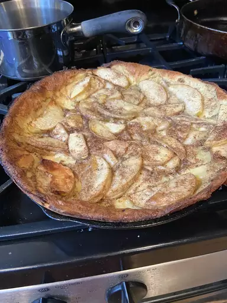

German Apple Pancake Recipe

Description
This German apple pancake is also known as a Dutch baby.
It is a terrific pancake recipe for those special occasions.
If you are strapped for time, you can start it the evening before
and pretty much pop it in the oven. The presentation is excellent!
Ingredients
- 4 eggs
- 1/2 cup unbleached all-purpose flour
- 1 tablespoon sugar
- 1/2 teaspoon baking powder
- 1 pinch salt
- 1 cup milk
- 2 tablespoons unsalted butter, melted
- 1/2 teaspoon ground nutmeg
- 1/4 cup unsalted butter
- 1/2 cup white sugar, divided
- 1/2 teaspoon ground cinnamon
- 1/2 teaspoon ground nutmeg
- 1 large tart apple - peeled, cored, and sliced